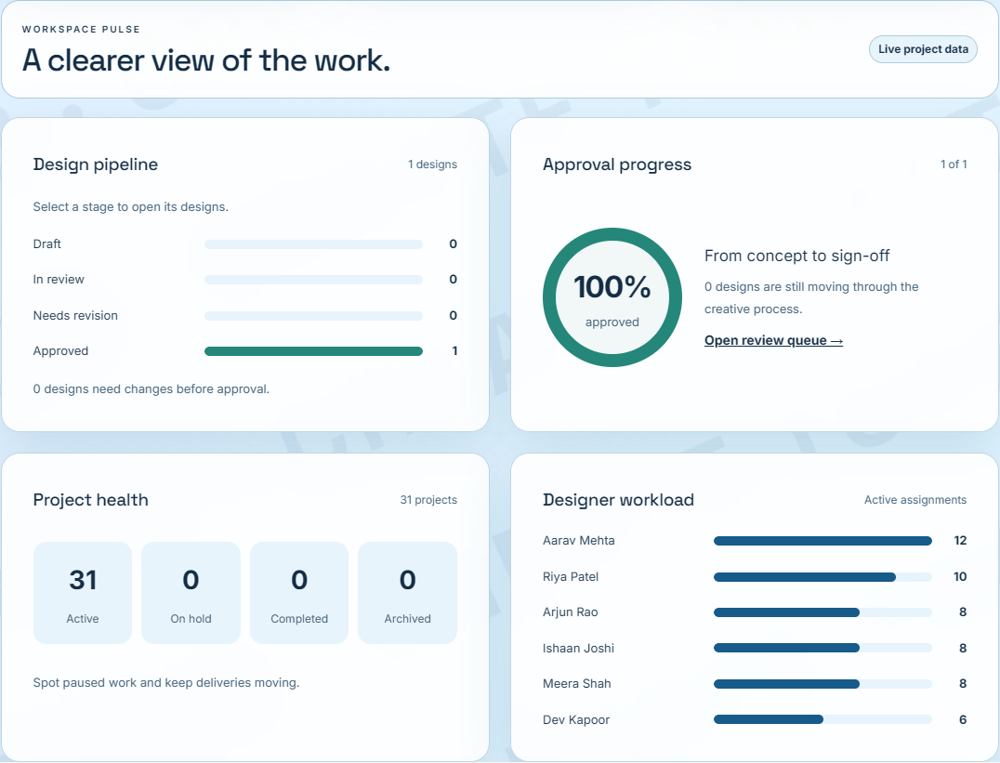
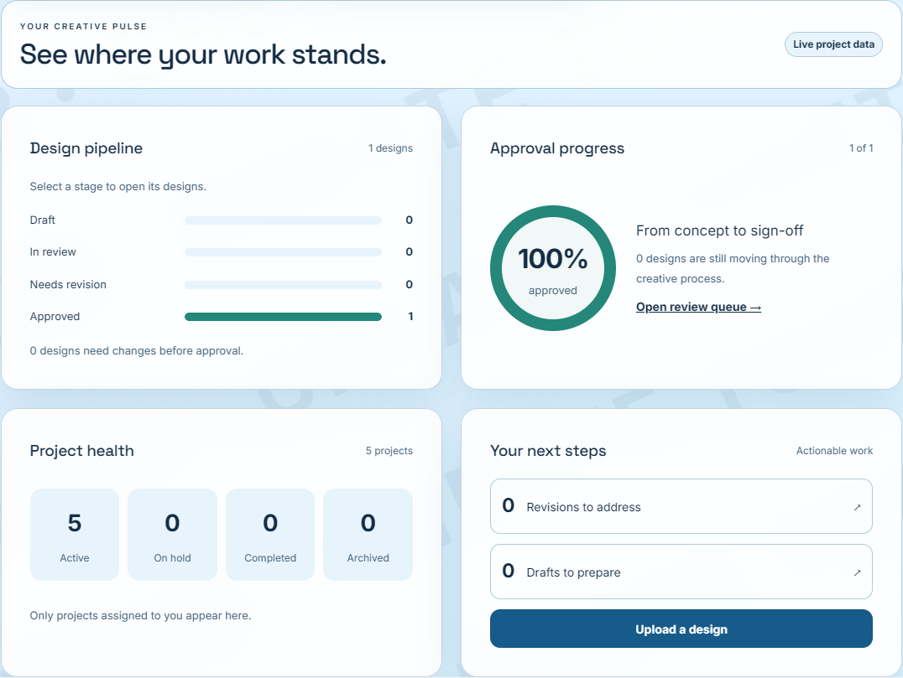
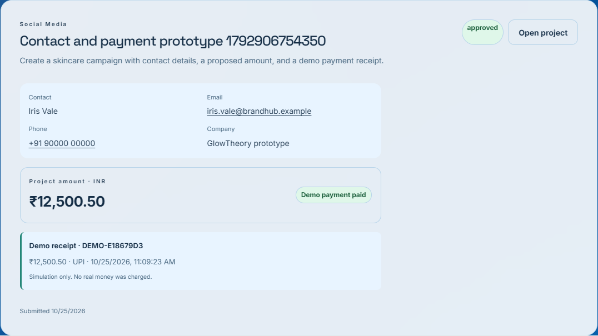

BRANDHUB · INTERNSHIP PROTOTYPE · 25 OCTOBER 2026Project management.
Creative review. Demo checkout.
All 11 functional requirements implemented81distinct automated tests covered
3 roleschart UI and data checks passed
7 stepscontact/payment browser checks passed
Admin has become Project Manager. One protected Super Admin manages privileged accounts. Dashboards show database-driven charts, and Client briefs include contacts, INR amounts and a complete dummy-payment experience.
Project Manager visualizations

Designer visualizations

Verified payment demonstration
Client submits contacts and INR 12,500.50; Project Manager approves and assigns a Designer; a declined simulation leaves it unpaid; successful demo checkout stores receipt DEMO-E18679D3. The receipt survives reload and is visible to management. No real money moves.

Submission guide
All 11 requirements and demonstration steps · Full verification report · Folder guide
Build and lint passed. The full existing backend suite passed 62 tests; two new payment tests and four project regressions passed after the payment update. All 17 client tests passed.
A repeated broad browser-route run hit local test limits/resource pressure and is not counted as a completed run. Focused chart, interaction and payment UI checks passed. Email delivery and deployed Vercel testing remain outside the completed local prototype. The full report records the test scope and evidence.